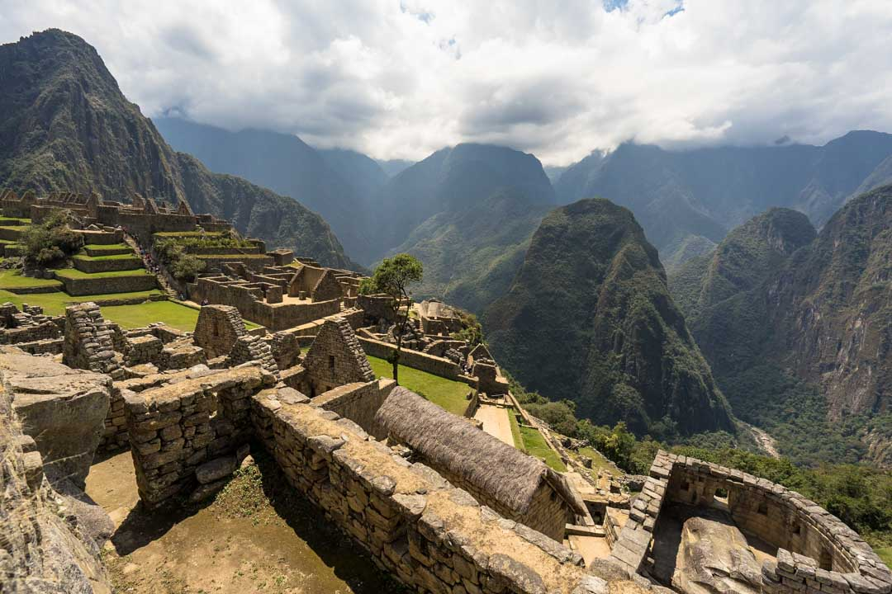
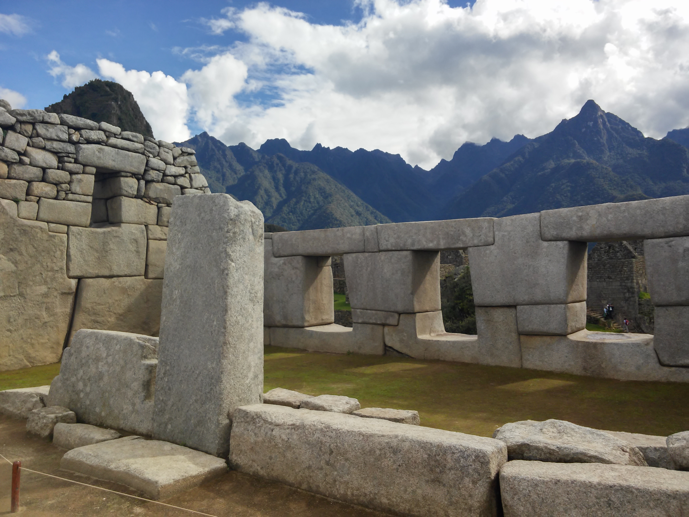
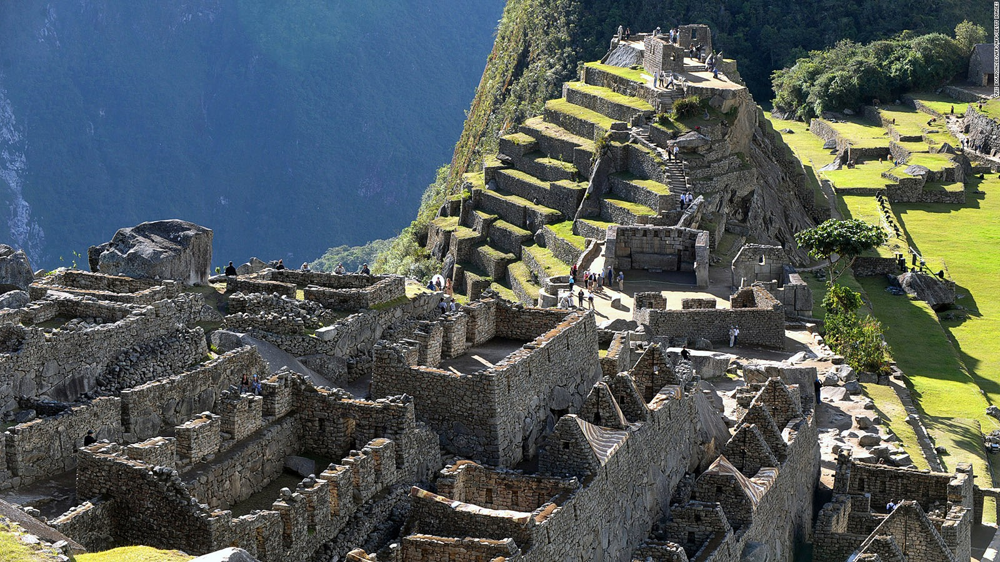
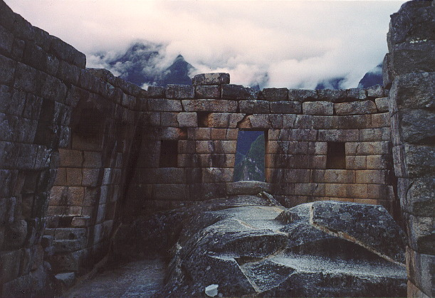

For many visitors to Peru and even South America, a visit to the Inca city of Machu Picchu is the long-anticipated highpoint of their trip.
In a spectacular location, it’s the best-known archaeological site on the continent. This awe-inspiring ancient city was never revealed to the conquering Spaniards
and was virtually forgotten until the early part of the 20th century. In the high season, from late May until early September, 2500 people arrive daily.
Despite this great tourist influx, the site manages to retain an air of grandeur and mystery, and is a must for all visitors to Peru.
The site is most heavily visited between 10am and 2pm. June through August are the busiest months.
Machu Picchu is located high up in the Andes Mountains in Peru,
and is often referred to as "The Lost City of the Incas".
“
Few romances can ever surpass that of the granite citadel on top of the beetling precipices of Machu Picchu - crown of the Inca Land.
In the variety of its charms and the power of its spell, I know of no other place in the world which can compare to it.
- Hiram Bingham -
History
Tucked away in the rocky countryside northwest of Cusco, Peru, Machu Picchu is an Incan citadel set high in the Andes Mountains, above the Urubamba River valley.
Built in the 15th century at the peak of the Incan Empire, it was later abandoned when the Incan civilization was virtually wiped out by Spanish invaders in the 16th century.
For hundreds of years, until the American archaeologist Hiram Bingham stumbled upon it in 1911, the abandoned citadel’s existence was a secret known only to peasants living in the region.
Featuring intriguing buildings that play on astronomical alignments, panoramic views and sophisticated dry-stone walls that fuse huge blocks without the use of mortar,
the site stretches over an impressive 5-mile distance, featuring more than 3,000 stone steps that link its many different levels.
Today, hundreds of thousands of people tramp through Machu Picchu every year, braving crowds and landslides
to see the sun set over its towering stone monuments and marvel at the mysterious splendor of one of the world’s most famous manmade wonders.
As of today, Machu Picchu's exact former use remains a mystery.
Fun Fact #1
Due to the Spanish Invasion of Peru, most cities built by the Incas were destroyed.
Miraculously, as Machu Picchu was so well-hidden, it was not discovered by the Spaniards,
thus this archeological gem still exists in present day.

Fun Fact #2
Till present day, the Incas were one of the greatest masons in the world.
Despite having no proper tools, the Incas could transport stones weighing more than 25kg up the mountain and
place these stones so seamlessly that not even a knife blade could fit in between.

Fun Fact #3
Made up of more than 150 buildings ranging from baths and houses to temples and sanctuaries,
it is not known what was the purpose of building Machu Picchu.
Some theories include it being a royal estate or a secret ceremonial center for human sacrifice.

Fun Fact #4
Machu Picchu has an astronomical observatory and its sacred Intihuatana stone accurately indicates the two equinoxes.
Twice a year, the sun sits directly over the stone creating no shadow.

1
2
3
4
Tour Packages
W.O.T.W is pleased to offer you and perhaps your family a wide array of tour packages: so many that you would be spoilt for choice!
Some tour packages to choose from:
Cusco to Machu Picchu Day Trip
2D Inca Trail Short Trek
3D2N Huchuy Qosco Long Trek
Many more tour packages to be released soon
Here at W.O.T.W, we specialise in customer satisfaction; if it is your desire, we can create a customised tour curated just for you.
However, do keep in mind that you should still abide by the rules of the land, as it is a public location that is shared by everyone.